ホーム
作品
展示
研究
実績
コンタクト
Tweet
English
展示
近日開催
To be announced...
アーカイブ
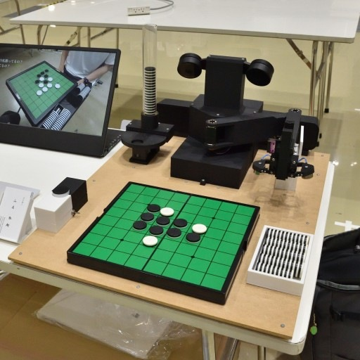
Maker Faire Tokyo 2025 (2025)
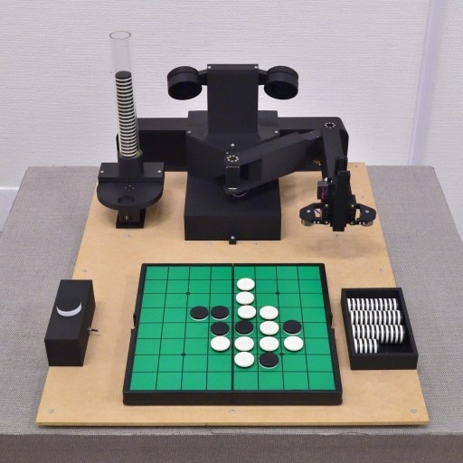
第7回つくばメディアアートフェスティバル (2025)
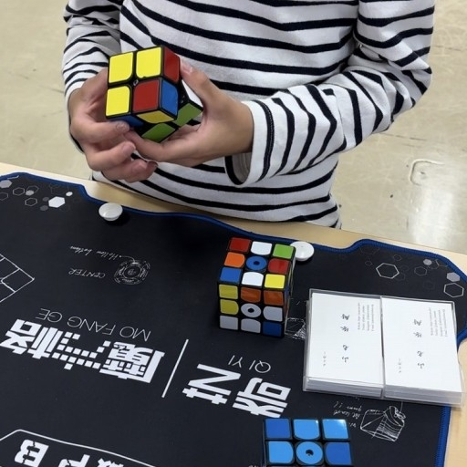
雙峰祭2024 メイカー〆切祭 (2024)
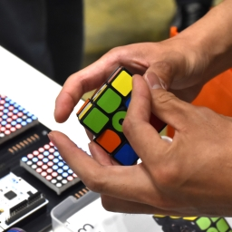
Maker Faire Tokyo 2024 (2024)
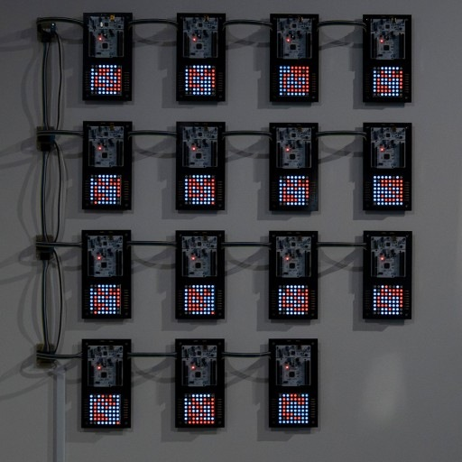
KUMA experiment 2023-24 vol.1 めくる、くぐる (2023)
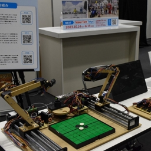
EdgeTech+ 2022 Maker Faire Tokyo 出張版 (2022)
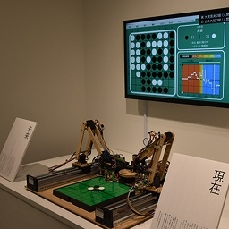
Kuma experiment vol.1 二回ひねって一度たつ (2022)
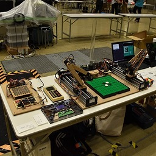
Maker Faire Tokyo 2022 (2022)
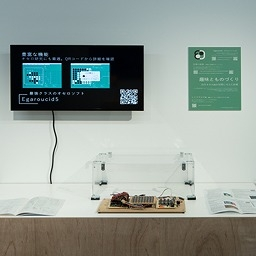
KUMA EXHIBITION 2022 Trans X Formation (2022)
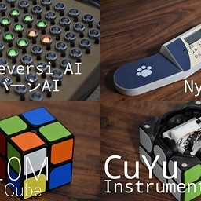
Maker Faire Tokyo 2021 (2021)
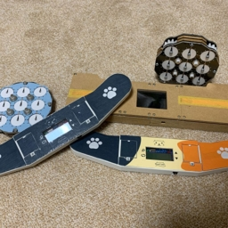
Maker Faire Tokyo 2020 (2020)
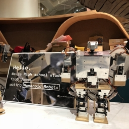
World Maker Faire New York 2018 (2018)
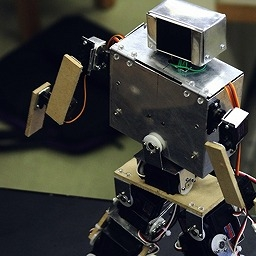
Maker Faire Tokyo 2018 (2018)
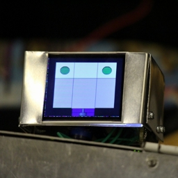
Maker Faire Tokyo 2017 (2017)
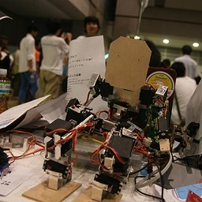
Maker Faire Tokyo 2015 (2015)